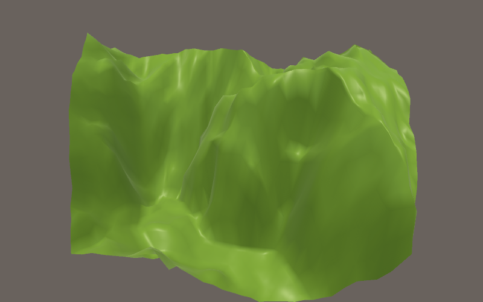

Fractal Landscape Generation
I wrote a script in Python a while back that I used in Blender to generate a random 3D landscape. Recently, I decided to rewrite the script in C# for use in the Unity Engine. The result is shown in the image above.
The technique is based on a well-known idea called a "fractal landscape" (Read more about it in this Wikipedia article). A fractal is a pattern that has some property that is maintained no matter how far you zoom in. In the case of the landscape fractal, the property maintained is the degree of the relative roughness of the surface.
The algorithm that generated the landscape shown above is based on a simple idea: (1) start out with a large triangle, (2) find the mid-points of each side of the triangle, and (3) offset each midpoint slightly up or down. Next, (4) divide the large triangle into 4 smaller triangles, by connecting the midpoints of each side of the large triangle. Repeat steps (2)-(4) as desired with the new triangles, and you get something like the landscape shown above. The process looks something like this:
(In the .gif above, I've used 3 triangles to compose a square)
In order to generate an "organic" looking landscape, it is crucial that the offset of the midpoints is random each time. Otherwise, the fractal will be "mathematical" looking like the Mandelbrot set.
You can find the GitHub repository for the C# script that generated this landscape here.